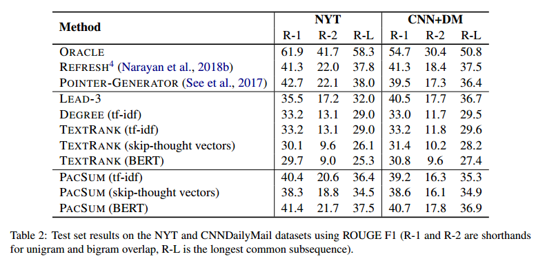

来源：Proceedings of the 57th Annual Meeting of the Association for Computational Linguistics, pages 6236–6247。（ACL2019）
一句话不看版：用BERT计算句子之间的相似度构建句子之间的关系图，然后基于节点的中心度进行抽取，同时考虑了句子的相对位置关系。
背景
基于神经网络的方法大多需要大量的document-summary对数据来训练模型。然而，对于不同领域不同风格的文本构建这样的训练数据式不现实的。因此本文考虑无监督的摘要方法。
无监督抽取式摘要方法中最著名的流派莫过于基于图排序算法的摘要方法，如TextRank。这种方法将文档中的每个句子看作一个节点，将句子之间的相似度看作节点之间的边，构建一个无向图，然后用类似PageRank方法来衡量节点的中心性。
本文从两个角度改进这种方法。
- 表示层面。利用目前比较先进的BERT模型来获得句子的表示，更好地捕捉语义特征。
- 将无向图改为有向图。考虑到很多情况下两个句子之间的贡献程度实际上式不相等的。
此外，本文还提出，目前基于神经网络的无监督单文档摘要方法还没有（这已经是到2019年了），虽然有些基于重构目标的无监督的多文档摘要方法。
We are not aware of any previous neural-based approaches to unsupervised single-document summarization, although some effort has gone into developing unsupervised models for multi-document summarization using reconstruction objectives (Li et al., 2017; Ma et al., 2016; Chu and Liu, 2018).
模型
Undirected Text Graph
对于一个文档$D={s_1,…,s_n}$，其中$s_i$表示第i个句子。$e_{ij}$表示$(s_i, s_j)$之间的相似度。那么对于句子 $s_i$来说，其中心度可以定义为：
$$
centrality(s_i)=\sum_{j\in {1,…,i-1,i+1,…,n}} e_{ij}
$$
对于构建好的无向图，根据每个句子的中心性得分排序，并选择得分最高的加入到摘要中。
另外，也可以用PageRank算法来计算每个节点的中心性得分。PageRank算法理论上更好因为它考虑到了全局的结构，而普通的基于度的中心性只考虑了局部结构。但是在实际实验中，作者发现使用PageRank带来的提升实际也不明显。
Directed Text Graph
考虑到在很多情况下，两个句子之间相互的贡献程度可能是不相等的（即A到B与B到A的权重不一样）。本文中提出将无向图改为有向图。本文额外考虑句子之间的相对位置，假设文档中出现位置靠前的句子的中心性应该更大。于是，对于两个句子$s_i, s_j (i < j)$，将一个无向的边转换成两个有向的边，于是节点$s_i$的中心性变为：
$$
centrality(s_i) = \lambda_1 \sum_{j < i}e_{ij} + \lambda_2 \sum_{j > i}e_{ij}
$$
其中$\lambda_1$和$\lambda_2$分别是前向权重与后向权重。而且当$\lambda_1 = \lambda_2 = 1$时，模型退化回了普通的基于度的模型。这两个权重可以在验证集上取调整，也可以人为设定以体现先验知识。本文中设置$\lambda_1 + \lambda_2 = 1$。
并且通过实验，发现最优的$\lambda_1$值倾向于是负数，这说明与前面句子的相似性实际上损害了句子的中心性。而目前的TextRank方法都没有考虑这种情况，而是只考虑边权重为非负值的情况。
不过本文对这个问题没有进一步探索，留做了future work。
Sentence Similarity Computation
下一个问题就是怎么计算句子之间的相似度了。这里就是用BERT来得到句子表示。
不过这里根据Sentence-level Distributional Hypothesis对BERT进行fine-tune。
对于文档$D$中的句子$s_i$，将它前一个句子$s_{i-1}$和后一个句子$s_{i+1}$作为正样本，其他句子作为负样本。
对于句子$s_i$的训练目标如下：
$$
\begin{array}{r}
\log \sigma\left(v_{s_{i-1}}^{\prime}{ }^{\top} v_{s_{i}}\right)+\log \sigma\left(v_{s_{i+1}}^{\prime}{ }^{\top} v_{s_{i}}\right) \\
+\mathbb{E}_ {s \sim P(s)}\left[\log \sigma\left(-v_{s}^{\prime \top} v_{s}\right)\right]
\end{array}
$$
其中$v_s$和$v_s’$是两个参数不同的BERT得到的句子s的两个表示。$\sigma$是sigmoid函数，$P(s)$是在句子空间上定义的均匀分布。
该目标函数使得模型能够区分context sentences和other sentences。这迫使encoder能够捕捉指定的句子的语义信息。实验中对于每个正样本采样五个负样本来估计期望。
直观理解，最后一项使得两个encoder尽可能将句子编码到不同的空间中；而前两项则使得不同空间中的句子也能够保持context的关系，即互为context的句子表示更加接近。
Similarity Matrix
得到了每个句子的表示${v_1, …, v_n}$之后，对于句子${s_1 ,…, s_n}$，计算句子对之间的相似度如下：
$$
\bar{E}_ {ij} = v_{i}^{T}v_{j}
$$
这里使用内积计算相似度，实际上也可以使用余弦相似度。这里作者说实验结果显示内积效果更好，empirically。。。
然后对相似度矩阵进行一下归一化：
$$
\tilde{E}_ {ij} = \bar{E}_ {ij} - [min(\bar{E}) + \beta (max(\bar{E}) - min(\bar{E}))]
$$
最后将$\tilde{E}$中小于0的元素截断为0，大于0的元素不变，得到最终的相似度矩阵$E_{ij}$。
实验
贴一下实验结果以及对比的baselines。

具体的实验设置和实验分析见原文吧。